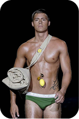
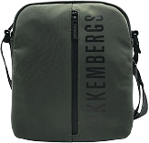
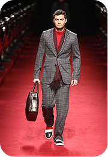
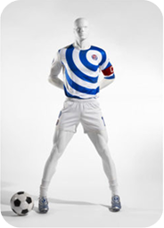
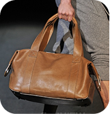
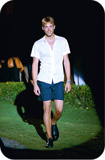
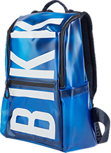

-
Dirk
Bikkembergs
-
geïnspireerd door
Atleten
-
geïnspireerd door
Militair
-
geïnspireerd door
mannen
In de geschiedenis van de mode werd het lichaam van de man lange tijd genegeerd. Mode was iets voor vrouwen en homoseksuelen, mannen waren meer gericht op daden, logica en het hebben van controle. Mannen keken naar anderen, maar ze werden zelf zelden bekeken.
Als je naar de collecties van Dirk Bikkembergs kijkt, zie je meer dan alleen kleren. Je ziet mannen met sterke lichamen, zoals atleten of sporters, die hard hebben getraind en klaar zijn om iets te doen.
Wat heeft hij in
beweging gezet?
Waarom voelt Dirks
mode anders?
druk om te knippen
swipe om te knippen

lichaam in
de voorgrond
Dirk Bikkembergs keert dat perspectief om. Vanaf het begin van zijn carrière staat het lichaam centraal. Het lichaam is niet zomaar een neutrale drager van kleding, maar een oppervlak met betekenis. Je kunt de spieren zien, de lijnen van de kleding volgen de vorm van het lichaam en de silhouetten geven de indruk van beweging. Kracht, discipline en viriliteit zijn de belangrijkste elementen van zijn esthetiek. Zijn mode lijkt een statement te maken over wat een man is.
Maar door dat lichaam zo duidelijk te laten zien, gebeurt er iets bijzonders. Het wordt niet alleen iets wat voor iets anders staat, maar ook iets wat je echt ziet. Iets waar mensen naar kijken. Iets wat mensen aantrekkelijk kunnen vinden.
Hoe komt hij
hier tot?
pure interesse?
obsessie?
Beelden als
verhalen
In de beginjaren van zijn carrière creëert Bikkembergs een heel eigen wereld van beelden. Het is van beelden. Het is alsof je door een serie korte verhalen bladert. In zijn catalogi en reclamecampagnes zie je verschillende soorten mannen: de atleet, de werkman, de opstandeling, de ontdekkingsreiziger. Telkens weer zie je het lichaam in beweging: hardlopen, werken, vechten, uitrusten na een zware inspanning.
of
Mannen worden vaak samen getoond. Ze duwen elkaar aan, geven elkaar een duwtje, houden elkaars hand vast, meten hun kracht. Het is heel gewoon dat ze dicht bij elkaar staan. De manier waarop ze staan, laat zien dat hun spieren gespannen zijn, hun bovenlichamen zijn bloot en de manier waarop ze gebaren, laat zien dat ze zowel concurreren als elkaar aanraken.
Deze beelden geven een gevoel van heldhaftigheid, maar ook van nabijheid. Het lichaam wordt sterk getoond, maar het blijft dichtbij. Het wordt aan de kijker gepresenteerd als iets om naar op te kijken, als een voorbeeld, als iets om te volgen en om te bekijken.
Wanneer lichaam
beeld wordt
In de jaren negentig verandert de manier waarop dingen worden gepresenteerd. Het verhaal wordt minder belangrijk en de omgeving wordt minder opvallend. De camera zoomt in op het lichaam. Het lichaam is nu het belangrijkste onderwerp. Modellen verschijnen met weinig kleren aan, zonder enige achtergrond. Alles draait nu om het beeld van de huid, de spieren en de houding van de man. De man wordt gezien als een vorm.
1999
2000
2002
2007
2012
2018
Mode en sport versmelten
Rond de eeuwwisseling neemt Bikkembergs een belangrijke beslissing. Hij combineert mode en sport. Voetbal is niet alleen een bron van inspiratie, maar wordt onderdeel van zijn identiteit. De campagnes van Bikkembergs spelen zich af op stadions, trainingsvelden en in kleedkamers. In plaats van modellen gebruikt hij atleten om zijn kleding te showen.
Die sportieve logica sijpelt door in zijn beeldtaal. De camera richt zich op torso’s, dijen en buikspieren, steeds nadrukkelijker op het midden van het lichaam. Zweet glanst op de huid, spieren spannen zich onder technische stoffen: de grens tussen prestatie en presentatie vervaagt. Voor Bikkembergs belichaamt sport alles wat mannelijkheid belooft, discipline, uithoudingsvermogen, competitie en het atletische lichaam wordt zo het ultieme symbool van kracht. Maar sport is ook een wereld van kijken: lichamen worden voortdurend bekeken, herhaald op schermen en bewonderd vanaf de tribune.
De blik
die blijft hangen
Er ontstaat een soort tweestrijd. De man blijft iemand die kracht uitstraalt, maar wordt ook iets wat je ziet. Vroeger keek iedereen naar het lichaam van de vrouw, maar hier gebeurt dat met het lichaam van de man. Als dit bedoeld is om te laten zien hoe sterk een man is, dan geeft het ook ruimte voor een andere manier van kijken: naar verlangen, naar dichtbij zijn en naar het delen van lichamelijke momenten.
In de beelden van Bikkembergs is kijken nooit onschuldig. De camera staat dichtbij, volgt de rondingen van schouders en buikspieren, rust op huid en spanning. Het mannenlichaam wordt niet alleen voorgesteld als actief en krachtig, maar ook als stilstaand, geposeerd, tentoongesteld.
dit is een man
wat zien we nu echt?
verlangen?
kracht?
wat zie jij?
plaats jouw kader!
Mannelijkheid als beeld
Dit werk laat zien dat mode niet alleen een afspiegeling is van hoe mannen moeten zijn, maar dat het ook een actieve rol speelt in het vormgeven van die beelden. Beelden zijn niet gewoon neutrale afbeeldingen. Ze bepalen hoe we naar dingen kijken, wat we verwachten en welke mogelijkheden we zien.
Bij Bikkembergs wordt het mannenlichaam een drager van tegenstrijdigheden. Het gaat om discipline en sensualiteit, heroïek en intimiteit, norm en afwijking. Zijn werk laat zien dat mannelijkheid geen vaststaand gegeven is. Mannelijkheid is een beeld dat telkens opnieuw wordt geconstrueerd.